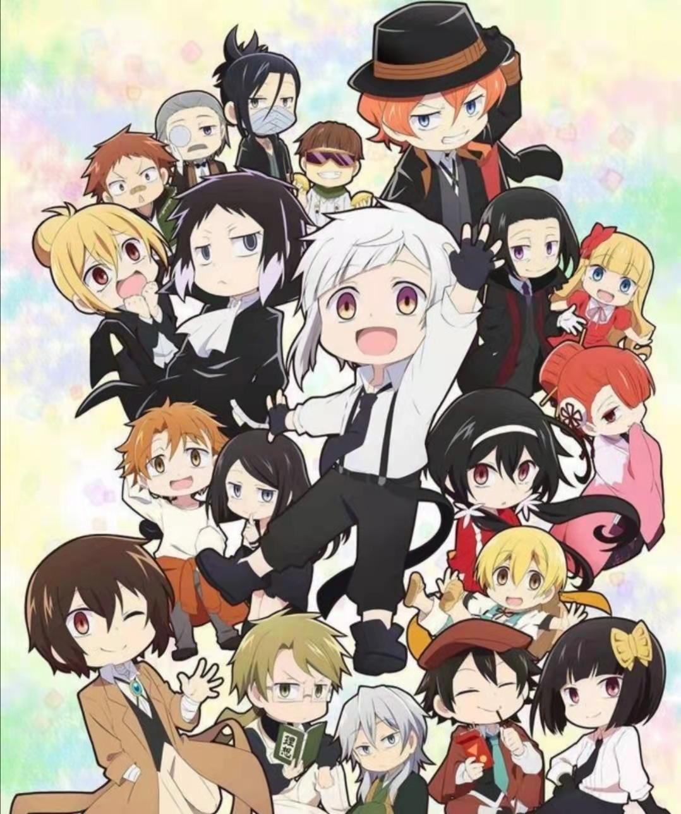
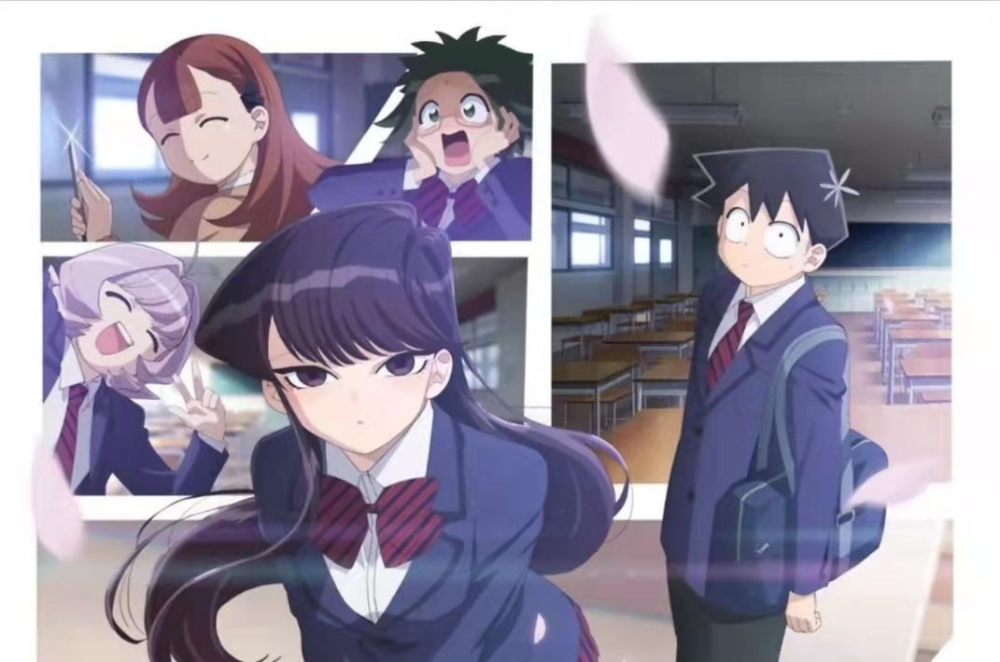
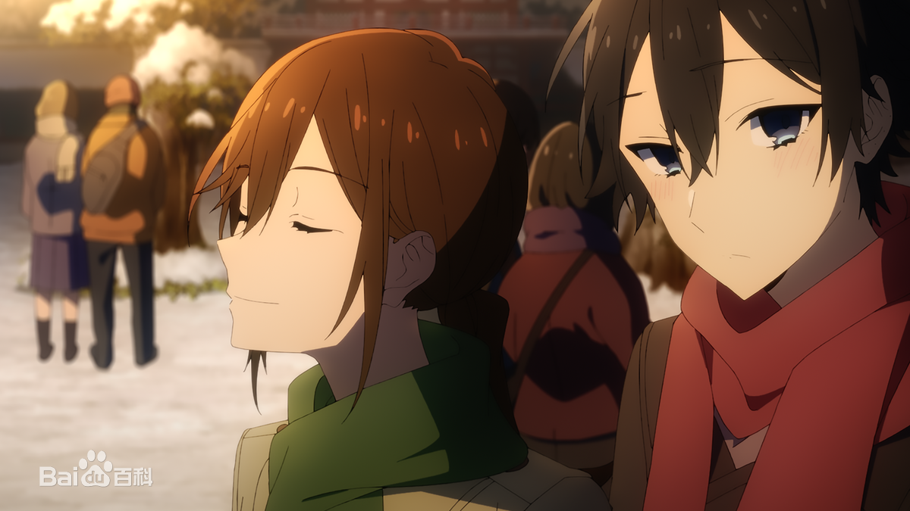
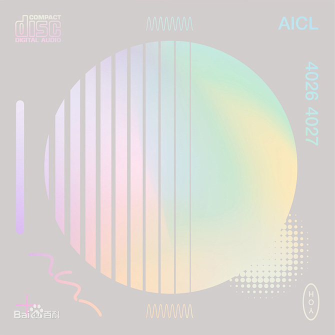

I Want to See Hori(堀与宫村)
 回到顶部
回到顶部
音乐1 Porlis
音乐2 -おやすみ、また明日
音乐3 我会呼唤你的名字 - 文豪野犬ED Namae wo Yobu yo
音乐4 Sympathy (シンパシー)
音乐5 I Want to See Hori
音乐6 Queen Hori
音乐7 About He,His,Him
音乐8 What I Can Do for Your Smile
音乐9 I Finally Knew
音乐10 BLF
音乐11 色香水
音乐12 約束
音乐13 息を吸う ここで吸う 生きてく
音乐14 みんなおなじ
音乐15 繁星小镇
音乐16 烟花再美也不及你
Porlis
Aisa D/JAMMERC
回到顶部
-おやすみ、また明日（小林家的龙女仆）
伊藤真澄
回到顶部
我会呼唤你的名字 - 文豪野犬ED Namae wo Yobu yo

回到顶部
Sympathy (シンパシー)
Kitri

回到顶部
I Want to See Hori(堀与宫村)
回到顶部
Queen Hori(堀与宫村)
 回到顶部
回到顶部
About He,His,Him(堀与宫村)
 回到顶部
回到顶部
What I Can Do for Your Smile(堀与宫村)
 回到顶部
回到顶部
I Finally Knew(堀与宫村)
 回到顶部
回到顶部
BLF(堀与宫村)

回到顶部
色香水 - Gt. Ver.(堀与宫村)

回到顶部
約束 - Pf.(堀与宫村)
 回到顶部
回到顶部
息を吸う ここで吸う 生きてく
ゆいにしお/水口浩次
 回到顶部
回到顶部
みんなおなじ
JYOCHO/中川大二朗
 回到顶部
回到顶部
繁星小镇
明日未来
 回到顶部
回到顶部
烟花再美也不及你
三暮雨
 回到顶部
回到顶部